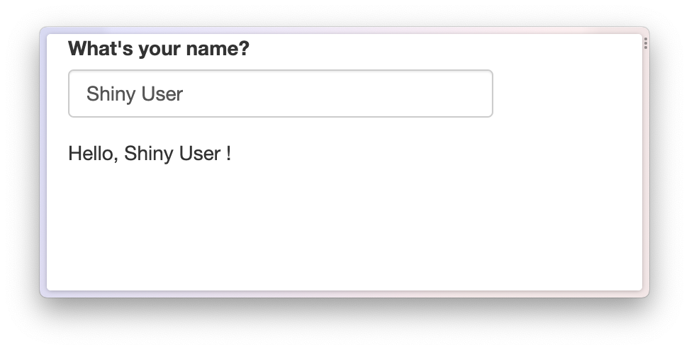
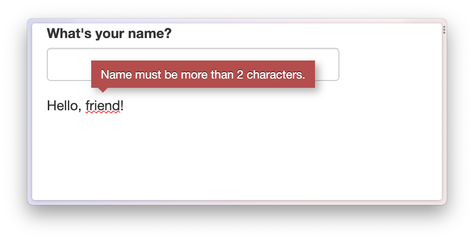
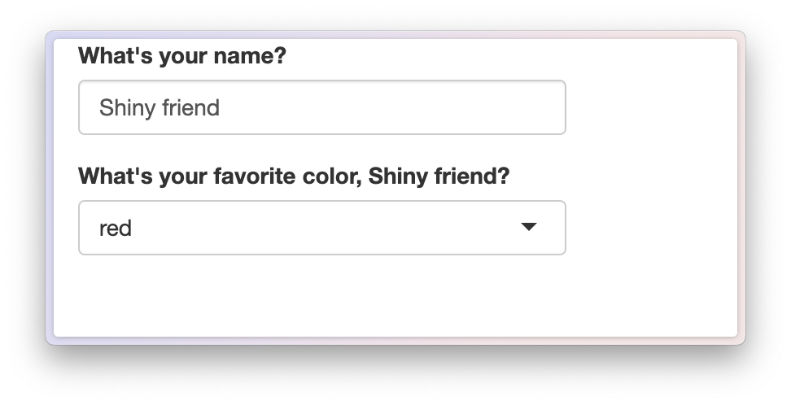
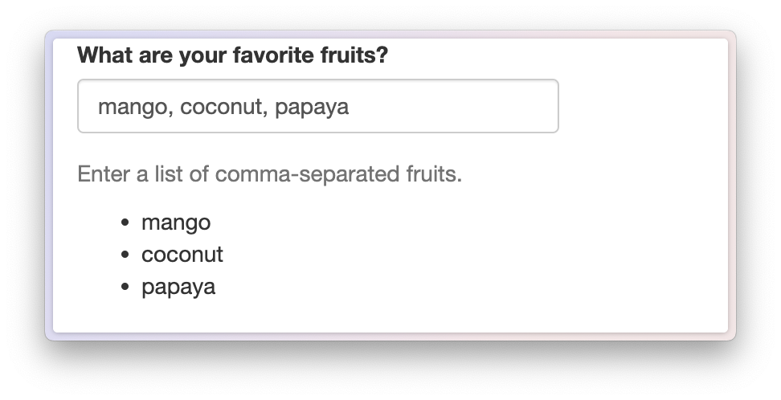
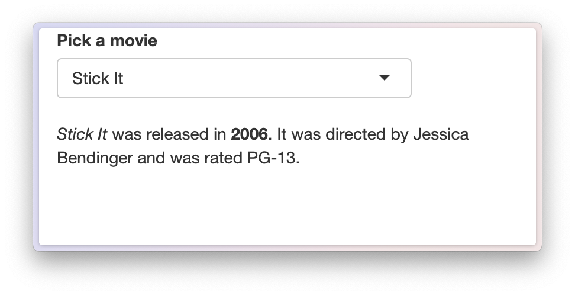
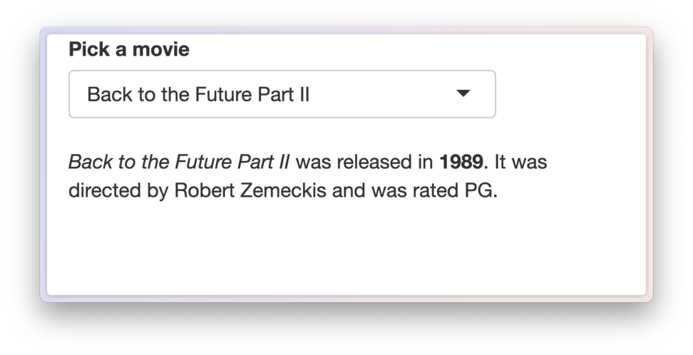
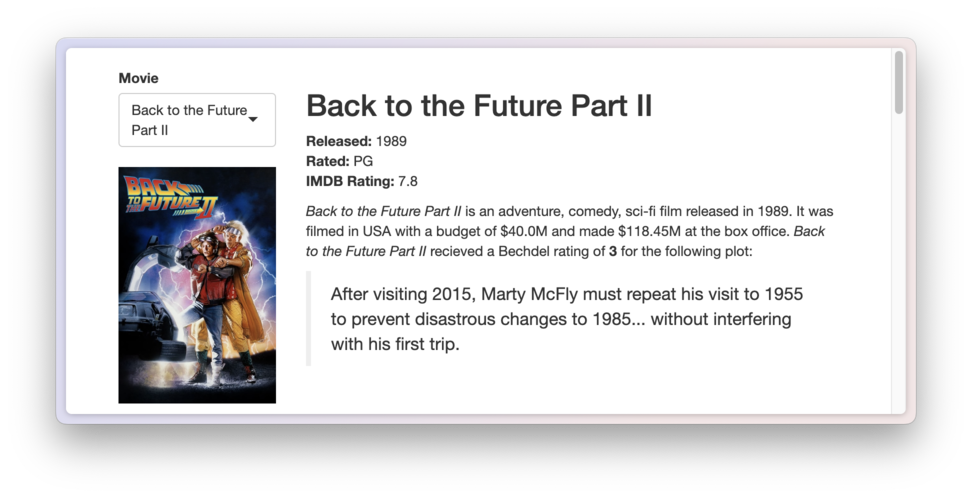
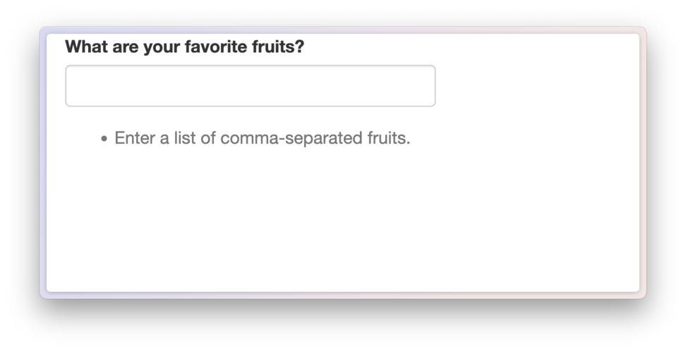
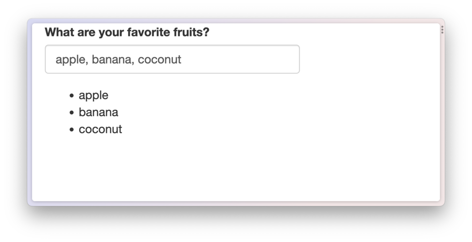

Templating in Shiny
Shiny apps are a great way to design interactive web applications, and epoxy includes several functions to help you weave reactive data into your apps.
Here are some ways you can use epoxy in your Shiny apps:
Make the text portion of any element in your Shiny UI update dynamically.
Weave reactive text into prose in your app.
Build powerful templates using the mustache templating language.
Shiny already includes two reactive text outputs:
-
shiny::uiOutput()(a.k.a.shiny::htmlOutput()) and -
shiny::textOutput().
These are great for displaying reactive text in your app, but they have some limitations:
uiOutput()tends to move your UI code into theserverfunction, making it harder to know the final structure of your UI.textOutput()is great for displaying reactive text, but it takes some work to get the spacing around the dynamic text just right.
In this article, we’ll learn how to use epoxy in Shiny apps and how epoxy improves the experience of writing apps with dynamic text and templates.
Introducing epoxy in Shiny
A basic Shiny app with textOutput()
Let’s start with an example Shiny app. It’s a simple but friendly app that greets the user by name.
library(shiny)
ui <- fluidPage(
textInput("name", "What's your name?"),
p("Hello,", textOutput("greeting", inline = TRUE), "!")
)
server <- function(input, output) {
output$greeting <- renderText(input$name)
}
shinyApp(ui, server)
This gets you pretty close to what you want, but you have to remember
to include inline = TRUE in textOutput().
There’s also some extra space between the user’s name and the
exclamation point that you’d probably like to get rid of1.
Setting up ui_epoxy_html()
Here’s how to approach dynamic text with
ui_epoxy_html():
Wrap a portion of your UI in
ui_epoxy_html()and give it an.id.Use
{{ name }}syntax to define fields where the dynamic text should go.In your server code, assign
render_epoxy()to an output matching the UI’s.idand pass in the reactive data as arguments with names matching the dynamic fields.
library(shiny)
library(epoxy)
ui <- fluidPage(
textInput("name", "What's your name?"),
ui_epoxy_html( #<< Template wrapper
.id = "greeting", #<< Unique ID
p("Hello, {{name}}!") #<< Dynamic text
) #<<
)
server <- function(input, output) {
output$greeting <- render_epoxy( #<< Connect to template
name = input$name #<< Reactive data field
)
}
shinyApp(ui, server)Default or error values
Another advantage of using ui_epoxy_html() over
textOutput() is that you can set default values that appear
immediately while your app is loading or that are used when an error
occurs.
In the next app, name is set to "friend" by
default in ui_epoxy_html(), and on the server side I’ve
also added a validate() call indicating that we need a name
with at least 2 characters.
library(shiny)
library(epoxy)
ui <- fluidPage(
textInput("name", "What's your name?"),
ui_epoxy_html(
.id = "greeting",
p("Hello, {{name}}!"),
name = "friend"
)
)
server <- function(input, output) {
name <- reactive({
validate(need(
nchar(input$name) > 2,
"Name must be more than 2 characters."
))
input$name
})
output$greeting <- render_epoxy(
name = name()
)
}
shinyApp(ui, server)If the user hasn’t yet entered a name of more than 2 characters, the
text for the name field will use the default value and will
have a red squiggle below it. Hovering over the squiggle reveals the
error message.

A few more things about ui_epoxy_html()
First, you can reference the same reactive value,
e.g. {{ name }}, as many times as you want in your
template. This value can also go just about anywhere in your UI. as long
as it’s okay to put a <span> around the text2.
Example app code
library(shiny)
library(epoxy)
ui <- fluidPage(
textInput("name", "What's your name?"),
ui_epoxy_html(
.id = "greeting",
selectInput(
inputId = "color",
label = "What's your favorite color, {{ name }}?",
choices = c("red", "green", "blue", "purple", "yellow")
),
name = "friend"
)
)
server <- function(input, output) {
output$greeting <- render_epoxy(
name = input$name
)
}
shinyApp(ui, server)
You can use {{ <markup> <expr> }} syntax3 from
epoxy_html(), which makes it possible to determine which
HTML element and class is used to contain the dynamic text4. If you send an array
of values to this reactive field, the tag is used as a template, making
it easy to do things like dynamically update a list.
Example app code
library(shiny)
library(epoxy)
ui <- fluidPage(
textInput("faves", "What are your favorite fruits?"),
helpText("Enter a list of comma-separated fruits."),
ui_epoxy_html(
.id = "fruit_list",
tags$ul("{{ li fruits }}"),
fruits = "favorite fruits"
)
)
server <- function(input, output) {
fruits <- reactive({
validate(need(
nzchar(input$faves),
"Please share your favorite fruits."
))
fruits <- trimws(strsplit(input$faves, ",\\s*")[[1]])
fruits[nzchar(fruits)]
})
output$fruit_list <- render_epoxy(
fruits = fruits()
)
}
shinyApp(ui, server)
Three more quick things about ui_epoxy_html():
It assumes that bare character strings are HTML, so you don’t have to worry about adding
HTML()all over the place.The replacement text is not assumed to be HTML, by default, to save you from accidentally injecting unsafe HTML from user input into your app. If you’re very certain that a field will only contain safe HTML, you can mark it as safe for HTML with three braces, e.g.
{{{ <expr> }}}.The replacement text is sent as bare text or HTML, making it more like
textOutput()thanuiOutput(). In particular, whereuiOutput()would allow you to send arbitary widgets based on htmlwidgets or htmltools,ui_epoxy_html()only ever sends the bare text or HTML.
Connecting epoxy with a reactive data frame
One of my favorite use cases for epoxy’s Shiny functions is to create
a UI template that’s filled in by a row in a data frame. In this
pattern, the app’s inputs are combined in a reactive expression that
filters the data frame down to a single row. Then, that row is sent via
render_epoxy() to the UI, where it’s dynamically injected
into the template UI.
Here’s a small example using epoxy’s built in bechdel
data set, a small data set with the 10 highest-rated movies that pass
the Bechdel
test. In this app, the user picks a movie and the template below is
filled out with information from the data set for that movie.
library(shiny)
library(epoxy)
movie_choices <- bechdel$imdb_id
names(movie_choices) <- bechdel$title
ui <- fixedPage(
selectInput("movie", "Pick a movie", choices = movie_choices),
ui_epoxy_html(
.id = "movie_info",
p(
"{{ em title }} was released",
"in {{ strong year }}.",
"It was directed by {{ director }}",
"and was rated {{ rated }}."
)
)
)
server <- function(input, output, session) {
movie <- reactive({
# Use the inputs to filter a single row
bechdel[bechdel$imdb_id == input$movie, ]
})
# Pass the reactive data frame to
# the .list argument of render_epoxy()
output$movie_info <- render_epoxy(.list = movie())
}
shinyApp(ui, server)
Notice that instead of passing named arguments for each field to
render_epoxy(), we pass the entire data frame to the
.list argument.
render_epoxy(.list = movie())You can use this same pattern with a list in a
reactiveVal(), a reactive() that returns a
data frame, a list or a list-like object, or a
reactiveValues() list. And .list can coexist
with named expressions.
render_epoxy(
name = input$name,
.list = movie()
)If you want to build the entire list within a single reactive
expression, set .list equal to the expression, wrapped in
braces:
render_epoxy(.list = {
list(
name = input$name,
age = input$age
)
})Markdown templates
If you’re using epoxy to write data-driven prose, you might want to
use markdown for your templates, rather than writing in HTML.
ui_epoxy_markdown() is a version of
ui_epoxy_html() that uses markdown syntax instead of HTML
syntax5.
Let’s revisit our movie app from the last example, but this time using markdown for the template.
library(shiny)
library(epoxy)
movie_choices <- bechdel$imdb_id
names(movie_choices) <- bechdel$title
ui <- fixedPage(
selectInput("movie", "Pick a movie", choices = movie_choices),
ui_epoxy_markdown(
.id = "movie_info",
"_{{ title }}_ was released",
"in **{{ year }}**.",
"It was directed by {{ director }}",
"and was rated {{ rated }}."
)
)
server <- function(input, output, session) {
movie <- reactive({
bechdel[bechdel$imdb_id == input$movie, ]
})
output$movie_info <- render_epoxy(.list = movie())
}
shinyApp(ui, server)
For an even more involved example, try the epoxy markdown example app
run_epoxy_example_app("ui_epoxy_markdown")
Mustache templates
For more complex templates, you might want to use a template language like Mustache. In R, we know this syntax from the whisker package.
ui_epoxy_mustache()6 wraps the Mustache language, letting you
blend typical shiny and htmltools UI with
the mustache template.
When would you use ui_epoxy_mustache() instead of
ui_epoxy_html()?
If your template variables are used as HTML attributes, e.g. in links or images (via the
hreforsrcattributes).If you want to use mustache’s conditional logic, e.g.
{{#<expr>}} ... {{/<expr>}}.
Let’s revist our favorite fruits example app from earlier.
library(shiny)
library(epoxy)
ui <- fluidPage(
textInput("faves", "What are your favorite fruits?"),
ui_epoxy_mustache(
id = "fruit_list",
tags$ul(
# If fruits is not empty, wrap into list items
"{{#fruits}}",
tags$li("{{.}}"),
"{{/fruits}}",
# If fruits is empty, show a help message
"{{^fruits}}",
tags$li(
class = "text-muted",
"Enter a list of comma-separated fruits."
),
"{{/fruits}}"
)
)
)
server <- function(input, output) {
fruits <- reactive({
req(input$faves)
fruits <- trimws(strsplit(input$faves, ",\\s*")[[1]])
fruits[nzchar(fruits)]
})
output$fruit_list <- render_epoxy(
fruits = fruits()
)
}
shinyApp(ui, server)This app use’s mustache’s conditional logic to show a help message when no fruits are entered.

And it uses mustache’s looping syntax to show a list of fruits when fruits are entered.

You can find a more detailed example in the epoxy mustache example app.
run_epoxy_example_app("ui_epoxy_mustache")One important thing to note about ui_epoxy_mustache() is
that, unlike ui_epoxy_html(), then entire template is
re-rendered (in the browser) whenever a reactive source updates. So it’d
be better to use smaller, localized templates than to wrap your entire
app in ui_epoxy_mustache().